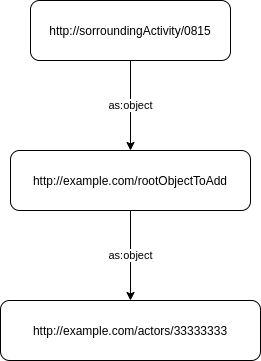

Hello all,
I am wondering in relation to the ActivityPub specification specifically on C2s, but is more general.
When I create an activity, I actually create an object. And does the specification specify that this object should be exactly ONE object? Or can it be an object that links other objects?
I add an example (without surrounding activity!)
@prefix output-file: <http://www.w3.org/ns/person#> .
@prefix schema: <http://schema.org/> .
@prefix foaf: <http://xmlns.com/foaf/0.1/> .
@prefix rdfs: <http://www.w3.org/2000/01/rdf-schema#> .
@prefix rdf: <http://www.w3.org/1999/02/22-rdf-syntax-ns#> .
@prefix SLR: <http://xxxxxxxxxxx/ns/slr#> .
@prefix as: <http://www.w3.org/ns/activitystreams#> .
@prefix xsd: <http://www.w3.org/2001/XMLSchema#> .
<http://example.com/rootObjectToAdd> a SLR:CreateActor;
<http://www.w3.org/2005/01/wf/flow#assignee> <http://localhost:8082/actors/4c207e4d-4b66-4a38-afa9-ec626a9f7a51>;
as:object <http://example.com/actors/33333333>;
as:to <http://localhost:8082/actors/4d055143-83c7-423e-bf5e-312e4443f467> .
<http://example.com/actors/33333333> a as:Object;
as:name "33333333" .
And how does the C2S create activity has to handle that? Just create the Object http://example.com/rootObjectToAdd and ignore http://example.com/actors/33333333 or save both objects.
Fredy
